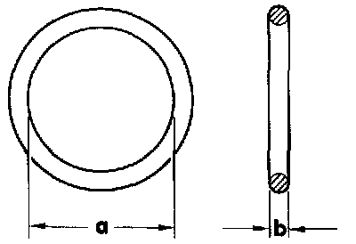

A/C Coupler O-ring: Service and Repair

- O-rings seal connections between A/C system components
- Always use correct size O-rings (dimensions -a- and -b-).
- Do not reuse O-rings, always replace. On R134a equipped vehicles, use only new O-rings that are compatible with R-134a refrigerant and the refrigerant (PAG) oil in R-134a systems.
- Lubricate O-rings with the appropriate refrigerant oil before installing (use PAG oil on R-134a systems).